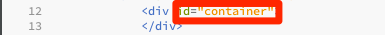
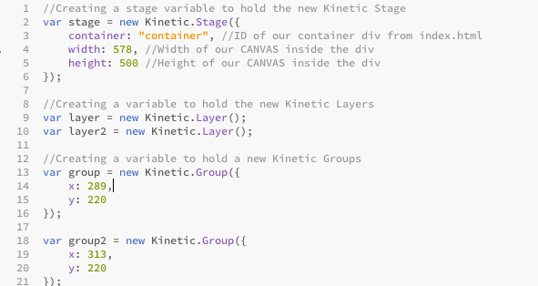
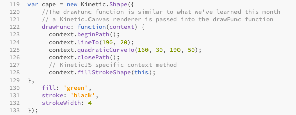

KineticJS is an HTML5 Canvas JavaScript framework that enables high performance animations, transitions, node nesting, layering, filtering, caching, event handling for desktop and mobile applications, and much more
First, the framework needs to be downloaded, which can be done at http://kineticjs.com/
Here is an example script tag. The "defer" is a necessary part of using KineticJS
KineticJS expects a div for the stage container, then creates the canvas elements inside that div
var stage = new Kinetic.Stage()
var layer = new Kinetic.Layer()
var group = new Kinetic.Group()
Creating a Kinetic shape is similar to creating an object and its properties
There are many optional properties and for a full list visit http://kineticjs.com/docs/index.html
var circle = new Kinetic.Circle({})
List of Required properties
var rectangle = new Kinetic.Rect({})
List of Required properties
var shape = new Kinetic.Shape({})
List of Required properties
The drawFunc function is similar to using typical HTML5 Canvas
var imageObj = new Image();
imageObj.src = "";
var image = new Kinetic.Image({})
List of Required properties
Now we simply add each group to its corresponding layer, and then each layer to the stage
Takes two arguments, a required update function and an optional layer, or array of layers, that will be updated with each animation frame. The animation function is passed a frame object which contains these properties:
The update function should never redraw the stage or a layer because the animation engine will intelligently handle that for us. Once created, we utilize the Start() method to begin the animation.
Kinetic Layers have a number of methods that allow you to control them in familiar ways
For a complete list of methods visit http://kineticjs.com/docs/Kinetic.Layer.html
Here we use two click events, one to move the “layer” layer to top with the moveToTop() method and another to move it back to bottom with the moveToBottom() method then redraw the layer each time
Dragging is easy in KineticJS. All we have to do in this instance is set the setDraggable() method on the stage to true and its done!
<!DOCTYPE HTML>
<html>
<title>KineticJS Project</title>
<head>
<script type="text/javascript" src="js/kinetic-v5.1.0.min.js"></script>
<script defer="defer" type="text/javascript" src="js/main.js"></script>
<link rel="stylesheet" href="css/main.css">
</head>
<body>
<h1>Fun with KineticJS!</h1>
<div id="contentBackground">
<div id="container">
</div>
Single letters in <aside> are a downloaded character font for button labels
<ul id="buttonControls">
<li><button type="button" id="moveToTop">Blue Hero to Top<aside>L</aside></button></li>
<li><button type="button" id="moveToBottom">Blue Hero to Bottom<aside>T</aside></button></li>
<li><button type="button" id="startAnimation">Make the Heroes Fly!<aside>W</aside></button></li>
<li><button type="button" id="stopAnimation">Make the Heroes Stop!<aside>E</aside></button></li>
</ul>
</div>
</body>
</html>
//Creating a stage variable to hold the new Kinetic Stage
var stage = new Kinetic.Stage({
container: "container", //ID of our container div from index.html
width: 578, //Width of our CANVAS inside the div
height: 500 //Height of our CANVAS inside the div
});
//Creating a variable to hold the new Kinetic Layers
var layer = new Kinetic.Layer();
var layer2 = new Kinetic.Layer();
//Creating a variable to hold a new Kinetic Groups
var group = new Kinetic.Group({
x: 289,
y: 220
});
var group2 = new Kinetic.Group({
x: 313,
y: 220
});
var head = new Kinetic.Circle({
x: 291,
y: 153,
radius: 10,
offset: {x:100, y:100},
fill: 'white',
stroke: 'black',
strokeWidth: 4
});
var head2 = new Kinetic.Circle({
x: 291,
y: 153,
radius: 10,
offset: {x:100, y:100},
fill: 'white',
stroke: 'black',
strokeWidth: 4
});
var body = new Kinetic.Rect({
x: 265,
y: 120,
height: 30,
width: 15,
offset: {x:100, y:100},
fill: "blue",
stroke: "black",
strokeWidth: 4,
cornerRadius:5
});
var body2 = new Kinetic.Rect({
x: 265,
y: 120,
height: 30,
width: 15,
offset: {x:100, y:100},
fill: "red",
stroke: "black",
strokeWidth: 4,
cornerRadius:5
});
var arms = new Kinetic.Rect({
x: 270,
y: 153,
height: 15,
width: 8,
offset: {x:100, y:100},
fill: "blue",
stroke: "black",
strokeWidth: 4,
cornerRadius:5
});
var arms2 = new Kinetic.Rect({
x: 270,
y: 153,
height: 15,
width: 8,
offset: {x:100, y:100},
fill: "red",
stroke: "black",
strokeWidth: 4,
cornerRadius:5
});
var legs = new Kinetic.Rect({
x: 268,
y: 105,
height: 30,
width: 8,
offset: {x:100, y:100},
fill: "green",
stroke: "black",
strokeWidth: 4,
cornerRadius:5
});
var legs2 = new Kinetic.Rect({
x: 268,
y: 105,
height: 30,
width: 8,
offset: {x:100, y:100},
fill: "yellow",
stroke: "black",
strokeWidth: 4,
cornerRadius:5
});
var cape = new Kinetic.Shape({
//The drawFunc function is similar to what we've learned this month
// a Kinetic.Canvas renderer is passed into the drawFunc function
drawFunc: function(context) {
context.beginPath();
context.lineTo(190, 20);
context.quadraticCurveTo(160, 30, 190, 50);
context.closePath();
// KineticJS specific context method
context.fillStrokeShape(this);
},
fill: 'green',
stroke: 'black',
strokeWidth: 4
});
var cape2 = new Kinetic.Shape({
drawFunc: function(context) {
context.beginPath();
context.lineTo(190, 20);
context.quadraticCurveTo(160, 30, 190, 50);
context.closePath();
// KineticJS specific context method
context.fillStrokeShape(this);
},
fill: 'yellow',
stroke: 'black',
strokeWidth: 4
});
var imageObj = new Image(); //new image instantiation
imageObj.src = 'images/earth.png'; //source of new image
imageObj.onload = function() { //function to draw the Kinetic Image
var earth = new Kinetic.Image({
x: 165,
y: 90,
image: imageObj,
width: 250,
height: 262
});
layer.add(earth); //Adding earth to "layer" layer
layer.batchDraw(); //Method that automatically hooks redraws into the KineticJS animation engine
};
//Adding shapes to the "group" group
group.add(cape);
group.add(legs);
group.add(arms);
group.add(body);
group.add(head);
//Adding shapes to the "group2" group
group2.add(cape2);
group2.add(legs2);
group2.add(arms2);
group2.add(body2);
group2.add(head2);
//adding the groups to their respective layers
layer.add(group);
layer2.add(group2);
//adding the layers to the stage
stage.add(layer);
stage.add(layer2);
//Click Event to start rotation animation
document.getElementById("startAnimation").addEventListener("click", function(){
//Making the groups rotate a complete circle every 4 seconds then passing stage to be redrawn
var angularSpeed = 360 / 4;
var anim = new Kinetic.Animation(function(frame) {
var angleDiff = frame.timeDiff * angularSpeed / 1000;
group.rotate(angleDiff);
group2.rotate(angleDiff);
}, stage);
anim.start();
//Click event to stop rotation animation
document.getElementById("stopAnimation").addEventListener("click", function(){
anim.stop();
});
});
document.getElementById("moveToTop").addEventListener("click", function(){
layer.moveToTop();
layer.draw();
}, false);
document.getElementById("moveToBottom").addEventListener("click", function(){
layer.moveToBottom();
layer.draw();
}, false);
stage.setDraggable("true");
body{
font-family: "Helvetica";
background: url(../images/bgtexture3.jpg);
background-repeat: no-repeat;
background-size: 100% 200%;
}
h1{
background-color: rgba(0,225,0,.6);
width: 100%;
text-align: center;
border: 2px solid;
}
#contentBackground{
margin: -22px 0 0 0;
background-color: rgba(225, 225,225, .2);
height: 550px;
width: 100%;
border: 1px solid;
overflow: hidden;
}
#container{
margin: 20px 0 0 150px;
border: 2px solid;
width: 578px;
height: 500px;
float: left;
background-color: rgba(0,0,0, .2);
border-radius: 5px;
}
#buttonControls{
margin: 10px 0 0 0;
float: right;
list-style-type: none;
width: 600px;
}
#buttonControls li{
margin: 65px 0 0 0;
}
#buttonControls button{
background: #ff3019; /* Old browsers */
background: -moz-linear-gradient(top, #ff3019 0%, #cf0404 100%); /* FF3.6+ */
background: -webkit-gradient(linear, left top, left bottom, color-stop(0%,#ff3019), color-stop(100%,#cf0404)); /* Chrome,Safari4+ */
background: -webkit-linear-gradient(top, #ff3019 0%,#cf0404 100%); /* Chrome10+,Safari5.1+ */
background: -o-linear-gradient(top, #ff3019 0%,#cf0404 100%); /* Opera 11.10+ */
background: -ms-linear-gradient(top, #ff3019 0%,#cf0404 100%); /* IE10+ */
background: linear-gradient(to bottom, #ff3019 0%,#cf0404 100%); /* W3C */
filter: progid:DXImageTransform.Microsoft.gradient( startColorstr='#ff3019', endColorstr='#cf0404',GradientType=0 ); /* IE6-9 */
width: 200px;
height: 50px;
font-family: "Helvetica";
font-weight: bold;
font-size: 10pt;
border: 2px solid;
border-radius: 5px;
box-shadow: 3px 3px 5px 1px rgba(0,0,0,.4);
outline-style: none;
}
#buttonControls button:active{
background: #ff5d4f; /* Old browsers */
background: -moz-linear-gradient(top, #ff5d4f 0%, #cf0404 100%); /* FF3.6+ */
background: -webkit-gradient(linear, left top, left bottom, color-stop(0%,#ff5d4f), color-stop(100%,#cf0404)); /* Chrome,Safari4+ */
background: -webkit-linear-gradient(top, #ff5d4f 0%,#cf0404 100%); /* Chrome10+,Safari5.1+ */
background: -o-linear-gradient(top, #ff5d4f 0%,#cf0404 100%); /* Opera 11.10+ */
background: -ms-linear-gradient(top, #ff5d4f 0%,#cf0404 100%); /* IE10+ */
background: linear-gradient(to bottom, #ff5d4f 0%,#cf0404 100%); /* W3C */
filter: progid:DXImageTransform.Microsoft.gradient( startColorstr='#ff5d4f', endColorstr='#cf0404',GradientType=0 ); /* IE6-9 */
}
#buttonControls aside{
display: inline;
margin: 0 0 0 15px;
font-family: "HeRoez";
font-size: 14pt;
}